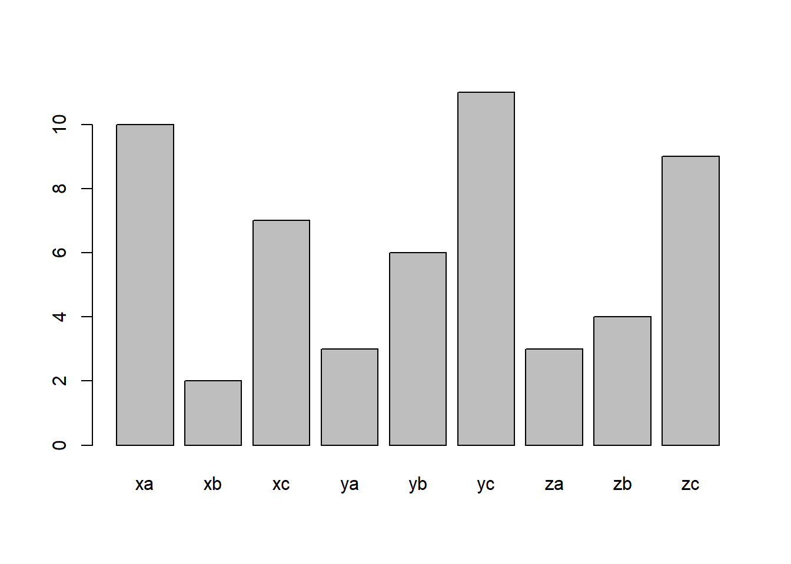
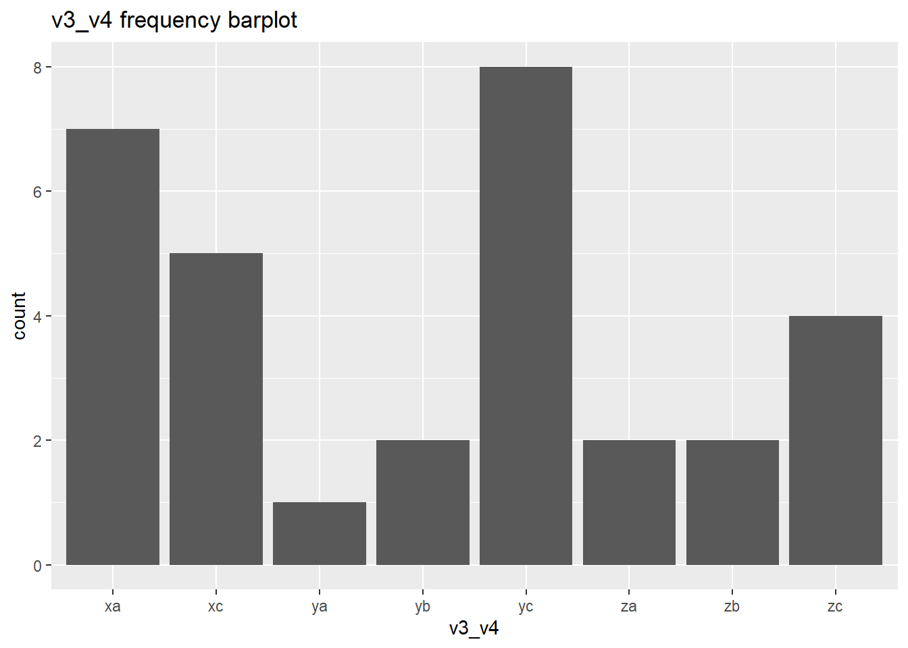

Translation Syntax Example
Package Deposit
## install.packages("descr")
library(descr) # freq()
## install.packages("ggplot2")
library(ggplot2)Data Management
create a data set with categorical and numeric variables and save as .csv
# numerical variable
v1 <- runif(100, 0, 7.5) # generate 10 random numbers between 0 and 7.5
v2 <- runif(100, 7.5, 15)
# categorical variable
v3 <- sample(c("x", "y", "z", "n"), size = 100, replace = T) # randomly sample 10 observations out of x, y, z
v4 <- sample(c("a", "b", "c", "n"), size = 100, replace = T)
v5 <- sample(c("p", "q", "n"), size = 100, replace = T)
# combine variables into a dataframe
ie.df <- data.frame(v1, v2, v3, v4, v5)
# save as csv
write.table(ie.df, file = "C:\\Users\\tonyr\\Downloads\\QAC201Z_Material\\example.csv", sep = ",", row.names = F)sort the data
# sort by ascending v1
ie.df <- ie.df[order(ie.df$v1, decreasing = F), ]selecting observations
# subset observations with x
ie.x <- ie.df[ie.df$v3 == "x", ]
# subset observations with x and a
ie.xa <- ie.df[ie.df$v3 == "x" & ie.df$v4 == "a", ]Deal with missing data
# label missing data with NA
## v3 and v4 "n" codes for NA
ie.df$v3[ie.df$v3 == "n"] <- NA
ie.df$v4[ie.df$v4 == "n"] <- NA
ie.df$v5[ie.df$v5 == "n"] <- NA
# subset observations without NA values in any variables
na.omit(ie.df)## v1 v2 v3 v4 v5
## 20 0.2182532 8.236008 y b q
## 81 0.4509586 12.259490 x c q
## 45 0.9970940 8.812699 x b q
## 96 1.0203474 14.415334 y a q
## 19 1.6298632 13.369064 x a p
## 29 1.6829258 10.256969 z b q
## 26 1.7856679 11.691355 z a q
## 68 2.1387222 9.675927 x a p
## 13 2.1410267 13.466816 x a p
## 39 2.4610040 12.738769 z a p
## 66 2.4800699 12.112379 z b q
## 16 2.5995665 8.964287 z a q
## 43 3.0128524 12.386328 y c q
## 74 3.0828531 7.634864 x b p
## 28 3.0871442 9.294498 x b q
## 42 3.1692107 8.081928 y a p
## 8 3.6169582 12.488102 y b q
## 98 3.9798190 12.194911 x c q
## 57 4.2808042 14.521275 x a q
## 86 4.3563241 11.300208 y b p
## 46 5.0939870 11.964688 x c p
## 9 5.1381336 14.607158 z b q
## 32 5.3369897 10.212829 y b p
## 56 5.5497203 9.775564 z c p
## 37 5.6621935 7.565057 y a q
## 92 5.6948850 8.505895 x c q
## 60 5.7485696 12.049195 y b p
## 44 5.7785225 7.773967 x a q
## 59 6.1685691 8.393816 z c q
## 23 6.3711189 11.017128 x a p
## 93 6.4007225 10.997248 x a q
## 17 6.4483568 10.336517 x c p
## 88 6.4640817 9.713224 y c q
## 97 6.5040858 11.643775 y b p
## 76 6.8306885 12.549877 x a p
## 7 7.2861332 11.608038 y a p
## 64 7.4081832 11.510047 z b p# subset observations without NA values in selected variable
ie.df[!is.na(ie.df$v3),]## v1 v2 v3 v4 v5
## 2 0.1766490 13.776823 x <NA> <NA>
## 20 0.2182532 8.236008 y b q
## 81 0.4509586 12.259490 x c q
## 53 0.5807496 14.858665 y c <NA>
## 10 0.7073295 14.728636 x <NA> q
## 36 0.7138407 9.671338 x <NA> <NA>
## 22 0.9008010 10.078654 z b <NA>
## 45 0.9970940 8.812699 x b q
## 96 1.0203474 14.415334 y a q
## 24 1.1281685 11.323117 y <NA> <NA>
## 49 1.2239708 8.356476 x <NA> p
## 48 1.3771125 11.605499 x <NA> <NA>
## 79 1.5781608 14.046586 z <NA> <NA>
## 19 1.6298632 13.369064 x a p
## 38 1.6757684 11.839120 x c <NA>
## 29 1.6829258 10.256969 z b q
## 83 1.6865834 11.242547 y <NA> p
## 26 1.7856679 11.691355 z a q
## 1 2.0123822 12.667533 x <NA> q
## 68 2.1387222 9.675927 x a p
## 13 2.1410267 13.466816 x a p
## 35 2.2898142 9.613416 z a <NA>
## 39 2.4610040 12.738769 z a p
## 66 2.4800699 12.112379 z b q
## 5 2.5413172 13.360038 x <NA> q
## 62 2.5493207 12.348395 y a <NA>
## 16 2.5995665 8.964287 z a q
## 41 2.6191272 9.937846 y b <NA>
## 43 3.0128524 12.386328 y c q
## 30 3.0578144 13.868358 z a <NA>
## 74 3.0828531 7.634864 x b p
## 28 3.0871442 9.294498 x b q
## 42 3.1692107 8.081928 y a p
## 72 3.3932360 8.605810 y <NA> <NA>
## 69 3.5999778 14.480695 z <NA> p
## 8 3.6169582 12.488102 y b q
## 100 3.7088585 11.734806 y b <NA>
## 98 3.9798190 12.194911 x c q
## 57 4.2808042 14.521275 x a q
## 4 4.2813867 11.420633 x c <NA>
## 86 4.3563241 11.300208 y b p
## 67 4.4541431 10.370297 z <NA> <NA>
## 47 4.5503804 13.874753 y <NA> p
## 65 4.6182744 13.309389 z <NA> p
## 94 4.6576116 10.404298 z <NA> q
## 54 4.7647249 10.919759 x c <NA>
## 12 5.0037505 8.023093 x b <NA>
## 46 5.0939870 11.964688 x c p
## 9 5.1381336 14.607158 z b q
## 14 5.1795252 10.331510 x <NA> p
## 32 5.3369897 10.212829 y b p
## 51 5.3674478 8.929027 y <NA> p
## 56 5.5497203 9.775564 z c p
## 6 5.6167156 11.181414 y <NA> <NA>
## 50 5.6555712 12.811077 z <NA> <NA>
## 37 5.6621935 7.565057 y a q
## 92 5.6948850 8.505895 x c q
## 60 5.7485696 12.049195 y b p
## 44 5.7785225 7.773967 x a q
## 77 6.0056292 8.462640 z b <NA>
## 91 6.1522126 12.877781 z b <NA>
## 59 6.1685691 8.393816 z c q
## 23 6.3711189 11.017128 x a p
## 93 6.4007225 10.997248 x a q
## 18 6.4202959 10.470590 y b <NA>
## 17 6.4483568 10.336517 x c p
## 88 6.4640817 9.713224 y c q
## 21 6.4849736 11.422020 y <NA> p
## 97 6.5040858 11.643775 y b p
## 11 6.6190607 14.323897 z <NA> <NA>
## 71 6.6487178 7.981695 y <NA> q
## 85 6.7934719 14.574692 y <NA> p
## 76 6.8306885 12.549877 x a p
## 58 6.9054497 9.618064 x <NA> q
## 7 7.2861332 11.608038 y a p
## 64 7.4081832 11.510047 z b pcollapse response into a new variable
# bin v1 into 4 sections
ie.df$v6[ie.df$v1 < 2] <- 1
ie.df$v6[ie.df$v1 >=2 & ie.df$v1 < 4] <- 2
ie.df$v6[ie.df$v1 >= 4 & ie.df$v1 < 6] <- 3
ie.df$v6[ie.df$v1 >= 6 & ie.df$v1 < 8] <- 4
# combine v3 and v4 into v7
ie.df$v7[is.na(ie.df$v3) | is.na(ie.df$v4)] <- NA
ie.df$v7[ie.df$v3 == "x" & ie.df$v4 == "a"] <- "xa"
ie.df$v7[ie.df$v3 == "x" & ie.df$v4 == "b"] <- "xb"
ie.df$v7[ie.df$v3 == "x" & ie.df$v4 == "c"] <- "xc"
ie.df$v7[ie.df$v3 == "y" & ie.df$v4 == "a"] <- "ya"
ie.df$v7[ie.df$v3 == "y" & ie.df$v4 == "b"] <- "yb"
ie.df$v7[ie.df$v3 == "y" & ie.df$v4 == "c"] <- "yc"
ie.df$v7[ie.df$v3 == "z" & ie.df$v4 == "a"] <- "za"
ie.df$v7[ie.df$v3 == "z" & ie.df$v4 == "b"] <- "zb"
ie.df$v7[ie.df$v3 == "z" & ie.df$v4 == "c"] <- "zc"
# sum up v1 and v2 into v7
ie.df$v8 <- ie.df$v1 + ie.df$v2rename variable
names(ie.df)[names(ie.df) == "v8"] <- "v1_v2"
names(ie.df)[names(ie.df) == "v7"] <- "v3_v4"
names(ie.df)[names(ie.df) == "v6"] <- "v1_level"label variable values
levels(ie.df$v1_level) <- c("lowest", "low", "high", "highest")Univariate Analysis
Categorical Variables
# frequency
#library(descr)
freq(as.ordered(ie.df$v3_v4))
## as.ordered(ie.df$v3_v4)
## Frequency Percent Valid Percent Cum Percent
## xa 8 8 15.686 15.69
## xb 4 4 7.843 23.53
## xc 8 8 15.686 39.22
## ya 5 5 9.804 49.02
## yb 9 9 17.647 66.67
## yc 3 3 5.882 72.55
## za 5 5 9.804 82.35
## zb 7 7 13.725 96.08
## zc 2 2 3.922 100.00
## NA's 49 49
## Total 100 100 100.000# frequency barplot
#library(ggplot2)
ggplot(data = na.omit(ie.df)) + # na.omit() removes any observations containing NA
geom_bar(aes(x = v3_v4)) +
ggtitle("v3_v4 frequency barplot")
Numeric Variables
# mean and standard deviation
mean(ie.df$v1_v2, na.rm = T)## [1] 15.01303sd(ie.df$v1_v2, na.rm = T)## [1] 2.66317# histogram
ggplot(data = ie.df)+
geom_histogram(aes(x = v1_v2))+
ggtitle("v1_v2 histogram")
Bivariate Analysis
Categorical-Categorical (crosstabs)
# crosstabs
table(ie.df$v3, ie.df$v4)##
## a b c
## x 8 4 8
## y 5 9 3
## z 5 7 2prop.table(table(ie.df$v3, ie.df$v4), 2) # col proportions##
## a b c
## x 0.4444444 0.2000000 0.6153846
## y 0.2777778 0.4500000 0.2307692
## z 0.2777778 0.3500000 0.1538462prop.table(table(ie.df$v3, ie.df$v4), 1) # row proportions##
## a b c
## x 0.4000000 0.2000000 0.4000000
## y 0.2941176 0.5294118 0.1764706
## z 0.3571429 0.5000000 0.1428571prop.table(table(ie.df$v3, ie.df$v4)) # cell proportions##
## a b c
## x 0.15686275 0.07843137 0.15686275
## y 0.09803922 0.17647059 0.05882353
## z 0.09803922 0.13725490 0.03921569# for binary categorical response
graph_data <- data.frame(v3 = na.omit(ie.df)$v3,
v5 = ifelse(na.omit(ie.df)$v5 == "p", 0, 1))
ggplot(data = graph_data)+
stat_summary(aes(x=v3, y = v5), fun = "mean", geom = "bar")+
ylab("poriton of responses that are '1 (aka. q)'")+
ggtitle("percentage of q within v3 groups")
# stacked barplot for mutli-level categorical responses
graph_data <- data.frame(v4 = c(rep("a", 3), rep("b", 3), rep("c", 3)),
v3 = rep(c("x", "y", "z"), 3),
value = as.numeric(table(ie.df$v3, ie.df$v4)))
ggplot(data = graph_data, aes(fill = v4, x = v3, y = value))+
geom_bar(position = "stack", stat = "identity")+
ylab("number of observations")+
ggtitle("number of subjects at each response level within each group")
Numeric-Categorical (means by group)
# mean by group
by(ie.df$v1, ie.df$v3_v4, mean, na.rm = T)## ie.df$v3_v4: xa
## [1] 4.446434
## ----------------------------------------------------------------------
## ie.df$v3_v4: xb
## [1] 3.04271
## ----------------------------------------------------------------------
## ie.df$v3_v4: xc
## [1] 4.048736
## ----------------------------------------------------------------------
## ie.df$v3_v4: ya
## [1] 3.937441
## ----------------------------------------------------------------------
## ie.df$v3_v4: yb
## [1] 4.281051
## ----------------------------------------------------------------------
## ie.df$v3_v4: yc
## [1] 3.352561
## ----------------------------------------------------------------------
## ie.df$v3_v4: za
## [1] 2.438773
## ----------------------------------------------------------------------
## ie.df$v3_v4: zb
## [1] 4.252565
## ----------------------------------------------------------------------
## ie.df$v3_v4: zc
## [1] 5.859145# standard deviation by group
by(ie.df$v1, ie.df$v3_v4, sd, na.rm = T)## ie.df$v3_v4: xa
## [1] 2.19036
## ----------------------------------------------------------------------
## ie.df$v3_v4: xb
## [1] 1.63644
## ----------------------------------------------------------------------
## ie.df$v3_v4: xc
## [1] 2.025094
## ----------------------------------------------------------------------
## ie.df$v3_v4: ya
## [1] 2.510727
## ----------------------------------------------------------------------
## ie.df$v3_v4: yb
## [1] 2.025749
## ----------------------------------------------------------------------
## ie.df$v3_v4: yc
## [1] 2.956341
## ----------------------------------------------------------------------
## ie.df$v3_v4: za
## [1] 0.4632213
## ----------------------------------------------------------------------
## ie.df$v3_v4: zb
## [1] 2.529926
## ----------------------------------------------------------------------
## ie.df$v3_v4: zc
## [1] 0.4375922# number of observations in group
by(ie.df$v1, ie.df$v3_v4, length)## ie.df$v3_v4: xa
## [1] 8
## ----------------------------------------------------------------------
## ie.df$v3_v4: xb
## [1] 4
## ----------------------------------------------------------------------
## ie.df$v3_v4: xc
## [1] 8
## ----------------------------------------------------------------------
## ie.df$v3_v4: ya
## [1] 5
## ----------------------------------------------------------------------
## ie.df$v3_v4: yb
## [1] 9
## ----------------------------------------------------------------------
## ie.df$v3_v4: yc
## [1] 3
## ----------------------------------------------------------------------
## ie.df$v3_v4: za
## [1] 5
## ----------------------------------------------------------------------
## ie.df$v3_v4: zb
## [1] 7
## ----------------------------------------------------------------------
## ie.df$v3_v4: zc
## [1] 2# barplot
ggplot(data = na.omit(ie.df))+
stat_summary(aes(x = v3_v4, y = v1), fun = "mean", geom = "bar")+
ggtitle("mean barplot")
# boxplot
ggplot(data = na.omit(ie.df))+
geom_boxplot(aes(x = v3_v4, y = v1))+
ggtitle("boxplot")
Numeric-Numeric
ggplot(data = na.omit(ie.df), aes(x = v1, y = v1_v2))+
geom_point()+
geom_smooth(method = "lm")+
ggtitle("Correlation between v1_v2 and v1")
Multivariate Analysis (Bivariate by subpopulation)
Categorical-Categorical
# for binary categorical response
graph_data <- data.frame(v3 = na.omit(ie.df)$v3,
v5 = ifelse(na.omit(ie.df)$v5 == "p", 0, 1),
v4 = na.omit(ie.df)$v4)
ggplot(data = graph_data)+
stat_summary(aes(x=v3, y = v5), fun = "mean", geom = "bar")+
facet_grid(.~v4)+
ylab("poriton of responses that are '1 (aka. q)'")+
ggtitle("percentage of q within v3 groups")
# stacked barplot for mutli-level categorical responses
graph_data <- data.frame(v4 = rep(c(rep("a", 3), rep("b", 3), rep("c", 3)), 2),
v3 = rep(c("x", "y", "z"), 6),
value = c(as.numeric(table(ie.df[ie.df$v5 == "p",]$v3, ie.df[ie.df$v5 == "p",]$v4)),
as.numeric(table(ie.df[ie.df$v5 == "q",]$v3, ie.df[ie.df$v5 == "q",]$v4))),
v5 = c(rep("p", 9), rep("q", 9)))
ggplot(data = graph_data)+
geom_bar(position = "stack", aes(fill = v4, x = v3, y = value), stat = "identity")+
facet_grid(.~v5)+
ylab("number of observations")+
ggtitle("number of subjects at each response level within each group")
Numeric-Categorical
# mean by group
ftable(by(ie.df$v1_v2, list(ie.df$v3_v4, ie.df$v5), mean, na.rm = T))## p q
##
## xa 15.83805 16.58418
## xb 10.71772 11.09572
## xc 16.92177 14.36199
## ya 15.07265 14.33147
## yb 16.78799 12.27966
## yc NA 15.78824
## za 15.19977 12.52044
## zb 18.91823 15.42588
## zc 15.32528 14.56238# boxplot
ggplot(data = na.omit(ie.df)) +
geom_boxplot(aes(x = v3_v4, y = v1_v2))+
facet_grid(.~v5)+
ggtitle("")
Numeric-Numeric
ggplot(data = na.omit(ie.df), aes(x = v1, y = v1_v2))+
geom_point()+
geom_smooth(method = "lm")+
facet_grid(.~v5)
Hypothesis Testing
Categorical-Categorical (\(\chi^2\))
Bivariate
# chisquare
chisq.test(na.omit(ie.df)$v4, na.omit(ie.df)$v3)##
## Pearson's Chi-squared test
##
## data: na.omit(ie.df)$v4 and na.omit(ie.df)$v3
## X-squared = 3.4426, df = 4, p-value = 0.4867# chisquare cell counts
chisq.test(na.omit(ie.df)$v4, na.omit(ie.df)$v3)$observed## na.omit(ie.df)$v3
## na.omit(ie.df)$v4 x y z
## a 8 4 3
## b 3 6 4
## c 5 2 2# posthoc (for more than two levels)
source("https://raw.githubusercontent.com/PassionDrivenStatistics/R/master/ChiSquarePostHoc.R")
chisq.post.hoc(chisq.test(na.omit(ie.df)$v4, na.omit(ie.df)$v3)$observed,
popsInRows = F,
control = "bonferroni")## Adjusted p-values used the bonferroni method.## comparison raw.p adj.p
## 1 x vs. y 0.2777 0.8331
## 2 x vs. z 0.5639 1.0000
## 3 y vs. z 1.0000 1.0000# Pearson Residuals
chisq.test(na.omit(ie.df)$v4, na.omit(ie.df)$v3)$residuals## na.omit(ie.df)$v3
## na.omit(ie.df)$v4 x y z
## a 0.5942669 -0.3921145 -0.3395811
## b -1.1057048 0.8687219 0.4711594
## c 0.5616965 -0.5378562 -0.1278659Multivariate
by(na.omit(ie.df), na.omit(ie.df)$v5, function(x) list(chisq.test(x$v4, x$v3),
chisq.test(x$v4, x$v3)$observed,
prop.table(chisq.test(x$v4, x$v3)$observed, 2)))## na.omit(ie.df)$v5: p
## [[1]]
##
## Pearson's Chi-squared test
##
## data: x$v4 and x$v3
## X-squared = 5.342, df = 4, p-value = 0.254
##
##
## [[2]]
## x$v3
## x$v4 x y z
## a 5 2 1
## b 1 4 1
## c 2 0 1
##
## [[3]]
## x$v3
## x$v4 x y z
## a 0.6250000 0.3333333 0.3333333
## b 0.1250000 0.6666667 0.3333333
## c 0.2500000 0.0000000 0.3333333
##
## ----------------------------------------------------------------------
## na.omit(ie.df)$v5: q
## [[1]]
##
## Pearson's Chi-squared test
##
## data: x$v4 and x$v3
## X-squared = 1.1706, df = 4, p-value = 0.8829
##
##
## [[2]]
## x$v3
## x$v4 x y z
## a 3 2 2
## b 2 2 3
## c 3 2 1
##
## [[3]]
## x$v3
## x$v4 x y z
## a 0.3750000 0.3333333 0.3333333
## b 0.2500000 0.3333333 0.5000000
## c 0.3750000 0.3333333 0.1666667Numeric-Categorical (ANOVA)
Bivariate
# anova
summary(aov(v1_v2 ~ v3_v4, data = na.omit(ie.df)))## Df Sum Sq Mean Sq F value Pr(>F)
## v3_v4 8 75.82 9.478 1.281 0.293
## Residuals 28 207.16 7.399# posthoc
TukeyHSD(aov(v1_v2 ~ v3_v4, data = na.omit(ie.df)))## Tukey multiple comparisons of means
## 95% family-wise confidence level
##
## Fit: aov(formula = v1_v2 ~ v3_v4, data = na.omit(ie.df))
##
## $v3_v4
## diff lwr upr p adj
## xb-xa -5.1481290 -11.326232 1.029974 0.1613976
## xc-xa -0.7319448 -5.934373 4.470483 0.9999103
## ya-xa -1.4157859 -7.004090 4.172518 0.9939233
## yb-xa -0.8326298 -5.761051 4.095791 0.9996489
## yc-xa -0.3296035 -7.544073 6.884866 1.0000000
## za-xa -2.7042968 -8.882399 3.473806 0.8603240
## zb-xa 0.1811202 -5.407184 5.769424 1.0000000
## zc-xa -1.1740118 -8.388481 6.040458 0.9997337
## xc-xb 4.4161843 -2.248257 11.080626 0.4188883
## ya-xb 3.7323432 -3.237497 10.702183 0.6838568
## yb-xb 4.3154992 -2.137319 10.768317 0.4069925
## yc-xb 4.8185255 -3.512026 13.149077 0.5935161
## za-xb 2.4438323 -5.007240 9.894904 0.9693579
## zb-xb 5.3292492 -1.640591 12.299089 0.2454638
## zc-xb 3.9741172 -4.356435 12.304669 0.7966041
## ya-xc -0.6838411 -6.805522 5.437839 0.9999846
## yb-xc -0.1006851 -5.626548 5.425178 1.0000000
## yc-xc 0.4023413 -7.232736 8.037418 1.0000000
## za-xc -1.9723520 -8.636794 4.692090 0.9835079
## zb-xc 0.9130649 -5.208615 7.034745 0.9998609
## zc-xc -0.4420671 -8.077144 7.193010 0.9999999
## yb-ya 0.5831560 -5.307434 6.473746 0.9999940
## yc-ya 1.0861824 -6.816873 8.989238 0.9999249
## za-ya -1.2885109 -8.258351 5.681329 0.9993224
## zb-ya 1.5969060 -4.855912 8.049724 0.9948023
## zc-ya 0.2417740 -7.661281 8.144829 1.0000000
## yc-yb 0.5030263 -6.948046 7.954098 0.9999997
## za-yb -1.8716669 -8.324485 4.581151 0.9854513
## zb-yb 1.0137500 -4.876840 6.904340 0.9995978
## zc-yb -0.3413820 -7.792454 7.109690 1.0000000
## za-yc -2.3746933 -10.705245 5.955859 0.9869565
## zb-yc 0.5107237 -7.392332 8.413779 0.9999998
## zc-yc -0.8444083 -9.970071 8.281254 0.9999964
## zb-za 2.8854170 -4.084423 9.855257 0.8927064
## zc-za 1.5302849 -6.800267 9.860837 0.9993530
## zc-zb -1.3551320 -9.258187 6.547923 0.9996085Multivariate
by(na.omit(ie.df), na.omit(ie.df)$v5, function(x) list(aov(v1_v2 ~ v3_v4, data = x),
summary(aov(v1_v2 ~ v3_v4, data = x)),
TukeyHSD(aov(v1_v2 ~ v3_v4, data = x))))## na.omit(ie.df)$v5: p
## [[1]]
## Call:
## aov(formula = v1_v2 ~ v3_v4, data = x)
##
## Terms:
## v3_v4 Residuals
## Sum of Squares 43.41459 66.82501
## Deg. of Freedom 7 9
##
## Residual standard error: 2.724886
## Estimated effects may be unbalanced
##
## [[2]]
## Df Sum Sq Mean Sq F value Pr(>F)
## v3_v4 7 43.41 6.202 0.835 0.585
## Residuals 9 66.83 7.425
##
## [[3]]
## Tukey multiple comparisons of means
## 95% family-wise confidence level
##
## Fit: aov(formula = v1_v2 ~ v3_v4, data = x)
##
## $v3_v4
## diff lwr upr p adj
## xb-xa -5.1203291 -16.585416 6.344758 0.6805911
## xc-xa 1.0837283 -7.672877 9.840333 0.9995235
## ya-xa -0.7653916 -9.521996 7.991213 0.9999520
## yb-xa 0.9499477 -6.070956 7.970851 0.9991568
## za-xa -0.6382736 -12.103361 10.826813 0.9999978
## zb-xa 3.0801839 -8.384903 14.545271 0.9568198
## zc-xa -0.5127623 -11.977849 10.952325 0.9999995
## xc-xb 6.2040574 -6.614300 19.022414 0.6029955
## ya-xb 4.3549376 -8.463420 17.173295 0.8763893
## yb-xb 6.0702768 -5.631229 17.771782 0.5318365
## za-xb 4.4820555 -10.319308 19.283419 0.9243188
## zb-xb 8.2005131 -6.600851 23.001877 0.4629225
## zc-xb 4.6075668 -10.193797 19.408931 0.9144720
## ya-xc -1.8491199 -12.315265 8.617025 0.9956334
## yb-xc -0.1337806 -9.197728 8.930167 1.0000000
## za-xc -1.7220019 -14.540359 11.096355 0.9991942
## zb-xc 1.9964556 -10.821901 14.814813 0.9979653
## zc-xc -1.5964906 -14.414848 11.221866 0.9995037
## yb-ya 1.7153393 -7.348608 10.779286 0.9934578
## za-ya 0.1271179 -12.691239 12.945475 1.0000000
## zb-ya 3.8455755 -8.972782 16.663933 0.9274238
## zc-ya 0.2526293 -12.565728 13.070986 1.0000000
## za-yb -1.5882213 -13.289727 10.113284 0.9991398
## zb-yb 2.1302362 -9.571269 13.831742 0.9947864
## zc-yb -1.4627100 -13.164216 10.238796 0.9994919
## zb-za 3.7184576 -11.082906 18.519821 0.9691177
## zc-za 0.1255113 -14.675852 14.926875 1.0000000
## zc-zb -3.5929462 -18.394310 11.208418 0.9741232
##
##
## ----------------------------------------------------------------------
## na.omit(ie.df)$v5: q
## [[1]]
## Call:
## aov(formula = v1_v2 ~ v3_v4, data = x)
##
## Terms:
## v3_v4 Residuals
## Sum of Squares 58.99518 89.46210
## Deg. of Freedom 8 11
##
## Residual standard error: 2.851827
## Estimated effects may be unbalanced
##
## [[2]]
## Df Sum Sq Mean Sq F value Pr(>F)
## v3_v4 8 59.00 7.374 0.907 0.544
## Residuals 11 89.46 8.133
##
## [[3]]
## Tukey multiple comparisons of means
## 95% family-wise confidence level
##
## Fit: aov(formula = v1_v2 ~ v3_v4, data = x)
##
## $v3_v4
## diff lwr upr p adj
## xb-xa -5.48846216 -15.342749 4.365824 0.5120670
## xc-xa -2.22219335 -11.036135 6.591748 0.9832240
## ya-xa -2.25271342 -12.107000 7.601573 0.9907658
## yb-xa -4.30451827 -14.158805 5.549768 0.7609180
## yc-xa -0.79593660 -10.650223 9.058350 0.9999949
## za-xa -4.06374153 -13.918028 5.790545 0.8068251
## zb-xa -1.15830089 -9.972243 7.655641 0.9997947
## zc-xa -2.02179462 -14.486590 10.443001 0.9990655
## xc-xb 3.26626881 -6.588018 13.120555 0.9257595
## ya-xb 3.23574874 -7.559081 14.030579 0.9555339
## yb-xb 1.18394388 -9.610886 11.978774 0.9999466
## yc-xb 4.69252556 -6.102304 15.487355 0.7650268
## za-xb 1.42472063 -9.370109 12.219551 0.9997881
## zb-xb 4.33016127 -5.524125 14.184448 0.7558335
## zc-xb 3.46666753 -9.754245 16.687580 0.9788756
## ya-xc -0.03052007 -9.884806 9.823766 1.0000000
## yb-xc -2.08232492 -11.936611 7.771961 0.9943990
## yc-xc 1.42625675 -8.428030 11.280543 0.9995853
## za-xc -1.84154818 -11.695835 8.012738 0.9975157
## zb-xc 1.06389246 -7.750049 9.877834 0.9998905
## zc-xc 0.20039873 -12.264397 12.665195 1.0000000
## yb-ya -2.05180486 -12.846635 8.743025 0.9972150
## yc-ya 1.45677682 -9.338053 12.251607 0.9997506
## za-ya -1.81102811 -12.605858 8.983802 0.9988161
## zb-ya 1.09441253 -8.759874 10.948699 0.9999413
## zc-ya 0.23091879 -12.989994 13.451831 1.0000000
## yc-yb 3.50858168 -7.286248 14.303412 0.9325913
## za-yb 0.24077675 -10.554053 11.035607 1.0000000
## zb-yb 3.14621738 -6.708069 13.000504 0.9383546
## zc-yb 2.28272365 -10.938189 15.503636 0.9985544
## za-yc -3.26780493 -14.062635 7.527025 0.9531552
## zb-yc -0.36236429 -10.216651 9.491922 1.0000000
## zc-yc -1.22585803 -14.446771 11.995054 0.9999851
## zb-za 2.90544063 -6.948846 12.759727 0.9592867
## zc-za 2.04194690 -11.178966 15.262859 0.9993392
## zc-zb -0.86349373 -13.328290 11.601302 0.9999984Numeric-Numeric (Pearson Correlation)
Bivariate
cor.test(na.omit(ie.df)$v1_v2, na.omit(ie.df)$v1)##
## Pearson's product-moment correlation
##
## data: na.omit(ie.df)$v1_v2 and na.omit(ie.df)$v1
## t = 5.7267, df = 35, p-value = 1.77e-06
## alternative hypothesis: true correlation is not equal to 0
## 95 percent confidence interval:
## 0.4795705 0.8320273
## sample estimates:
## cor
## 0.6955137Multivariate
by(na.omit(ie.df), na.omit(ie.df)$v5, function(x) cor.test(x$v1_v2, x$v1))## na.omit(ie.df)$v5: p
##
## Pearson's product-moment correlation
##
## data: x$v1_v2 and x$v1
## t = 4.7367, df = 15, p-value = 0.0002649
## alternative hypothesis: true correlation is not equal to 0
## 95 percent confidence interval:
## 0.4674424 0.9145147
## sample estimates:
## cor
## 0.7741549
##
## ----------------------------------------------------------------------
## na.omit(ie.df)$v5: q
##
## Pearson's product-moment correlation
##
## data: x$v1_v2 and x$v1
## t = 3.0604, df = 18, p-value = 0.006738
## alternative hypothesis: true correlation is not equal to 0
## 95 percent confidence interval:
## 0.1922825 0.8162339
## sample estimates:
## cor
## 0.5850241Regression
linear regression (numeric response)
# simple
summary(lm(v1_v2 ~ v1, data = na.omit(ie.df)))##
## Call:
## lm(formula = v1_v2 ~ v1, data = na.omit(ie.df))
##
## Residuals:
## Min 1Q Median 3Q Max
## -3.367 -1.707 0.397 1.262 3.765
##
## Coefficients:
## Estimate Std. Error t value Pr(>|t|)
## (Intercept) 11.2410 0.7424 15.142 < 2e-16 ***
## v1 0.9225 0.1611 5.727 1.77e-06 ***
## ---
## Signif. codes: 0 '***' 0.001 '**' 0.01 '*' 0.05 '.' 0.1 ' ' 1
##
## Residual standard error: 2.043 on 35 degrees of freedom
## Multiple R-squared: 0.4837, Adjusted R-squared: 0.469
## F-statistic: 32.8 on 1 and 35 DF, p-value: 1.77e-06# multiple
summary(lm(v1_v2 ~ v1 + factor(v5), data = na.omit(ie.df)))##
## Call:
## lm(formula = v1_v2 ~ v1 + factor(v5), data = na.omit(ie.df))
##
## Residuals:
## Min 1Q Median 3Q Max
## -3.6741 -1.7404 0.5649 1.3591 4.0311
##
## Coefficients:
## Estimate Std. Error t value Pr(>|t|)
## (Intercept) 11.6597 0.9575 12.177 5.99e-14 ***
## v1 0.8862 0.1703 5.203 9.36e-06 ***
## factor(v5)q -0.4990 0.7126 -0.700 0.489
## ---
## Signif. codes: 0 '***' 0.001 '**' 0.01 '*' 0.05 '.' 0.1 ' ' 1
##
## Residual standard error: 2.058 on 34 degrees of freedom
## Multiple R-squared: 0.4911, Adjusted R-squared: 0.4611
## F-statistic: 16.4 on 2 and 34 DF, p-value: 1.031e-05# multiple with interaction terms
summary(lm(v1_v2 ~ v1 + factor(v5) + v1*factor(v5), data = na.omit(ie.df)))##
## Call:
## lm(formula = v1_v2 ~ v1 + factor(v5) + v1 * factor(v5), data = na.omit(ie.df))
##
## Residuals:
## Min 1Q Median 3Q Max
## -3.431 -1.562 0.323 1.379 4.202
##
## Coefficients:
## Estimate Std. Error t value Pr(>|t|)
## (Intercept) 10.9792 1.3547 8.105 2.35e-09 ***
## v1 1.0281 0.2622 3.921 0.000421 ***
## factor(v5)q 0.5559 1.6400 0.339 0.736798
## v1:factor(v5)q -0.2480 0.3467 -0.715 0.479408
## ---
## Signif. codes: 0 '***' 0.001 '**' 0.01 '*' 0.05 '.' 0.1 ' ' 1
##
## Residual standard error: 2.073 on 33 degrees of freedom
## Multiple R-squared: 0.4989, Adjusted R-squared: 0.4533
## F-statistic: 10.95 on 3 and 33 DF, p-value: 3.813e-05logistic regression (categorical response)
# simple
summary(glm(factor(v5) ~ v1, data = na.omit(ie.df), family = "binomial")) # p-value##
## Call:
## glm(formula = factor(v5) ~ v1, family = "binomial", data = na.omit(ie.df))
##
## Deviance Residuals:
## Min 1Q Median 3Q Max
## -1.6003 -1.0671 0.6876 1.0383 1.4180
##
## Coefficients:
## Estimate Std. Error z value Pr(>|z|)
## (Intercept) 1.4621 0.8137 1.797 0.0724 .
## v1 -0.3112 0.1733 -1.796 0.0725 .
## ---
## Signif. codes: 0 '***' 0.001 '**' 0.01 '*' 0.05 '.' 0.1 ' ' 1
##
## (Dispersion parameter for binomial family taken to be 1)
##
## Null deviance: 51.049 on 36 degrees of freedom
## Residual deviance: 47.524 on 35 degrees of freedom
## AIC: 51.524
##
## Number of Fisher Scoring iterations: 4exp(glm(factor(v5) ~ v1, data = na.omit(ie.df), family = "binomial")$coefficients) # odd-ratios## (Intercept) v1
## 4.314879 0.732547exp(confint(glm(factor(v5) ~ v1, data = na.omit(ie.df), family = "binomial"))) # confidence interval of odd ratios## 2.5 % 97.5 %
## (Intercept) 0.9574023 24.837615
## v1 0.5080832 1.013296# multiple
summary(glm(factor(v5) ~ v1 + factor(v3), data = na.omit(ie.df), family = "binomial")) # p-value##
## Call:
## glm(formula = factor(v5) ~ v1 + factor(v3), family = "binomial",
## data = na.omit(ie.df))
##
## Deviance Residuals:
## Min 1Q Median 3Q Max
## -1.7120 -1.0429 0.6606 1.0555 1.4986
##
## Coefficients:
## Estimate Std. Error z value Pr(>|z|)
## (Intercept) 1.2470 0.8809 1.416 0.1569
## v1 -0.3088 0.1742 -1.773 0.0762 .
## factor(v3)y 0.1131 0.8049 0.141 0.8882
## factor(v3)z 0.7156 0.9072 0.789 0.4302
## ---
## Signif. codes: 0 '***' 0.001 '**' 0.01 '*' 0.05 '.' 0.1 ' ' 1
##
## (Dispersion parameter for binomial family taken to be 1)
##
## Null deviance: 51.049 on 36 degrees of freedom
## Residual deviance: 46.851 on 33 degrees of freedom
## AIC: 54.851
##
## Number of Fisher Scoring iterations: 4exp(glm(factor(v5) ~ v1 + factor(v3), data = na.omit(ie.df), family = "binomial")$coefficients) # odd-ratios## (Intercept) v1 factor(v3)y factor(v3)z
## 3.4799944 0.7343379 1.1197943 2.0454835exp(confint(glm(factor(v5) ~ v1 + factor(v3), data = na.omit(ie.df), family = "binomial"))) # confidence interval of odd ratios## 2.5 % 97.5 %
## (Intercept) 0.6646040 22.731303
## v1 0.5082535 1.017992
## factor(v3)y 0.2285190 5.627869
## factor(v3)z 0.3581840 13.641112# multiple with interaction terms
summary(glm(factor(v5) ~ v1 + factor(v3) + v1*factor(v3), data = na.omit(ie.df), family = "binomial")) # p-value##
## Call:
## glm(formula = factor(v5) ~ v1 + factor(v3) + v1 * factor(v3),
## family = "binomial", data = na.omit(ie.df))
##
## Deviance Residuals:
## Min 1Q Median 3Q Max
## -1.8535 -1.0893 0.5115 1.0742 1.6810
##
## Coefficients:
## Estimate Std. Error z value Pr(>|z|)
## (Intercept) 0.36214 1.10152 0.329 0.742
## v1 -0.08994 0.24334 -0.370 0.712
## factor(v3)y 2.18702 2.17123 1.007 0.314
## factor(v3)z 2.32737 2.21767 1.049 0.294
## v1:factor(v3)y -0.47983 0.44933 -1.068 0.286
## v1:factor(v3)z -0.38529 0.46442 -0.830 0.407
##
## (Dispersion parameter for binomial family taken to be 1)
##
## Null deviance: 51.049 on 36 degrees of freedom
## Residual deviance: 45.321 on 31 degrees of freedom
## AIC: 57.321
##
## Number of Fisher Scoring iterations: 4exp(glm(factor(v5) ~ v1 + factor(v3) + v1*factor(v3), data = na.omit(ie.df), family = "binomial")$coefficients) # odd-ratios## (Intercept) v1 factor(v3)y factor(v3)z v1:factor(v3)y v1:factor(v3)z
## 1.4364024 0.9139884 8.9086232 10.2509070 0.6188856 0.6802522exp(confint(glm(factor(v5) ~ v1 + factor(v3) + v1*factor(v3), data = na.omit(ie.df), family = "binomial"))) # confidence interval of odd ratios## 2.5 % 97.5 %
## (Intercept) 0.1600077 14.621726
## v1 0.5517583 1.478018
## factor(v3)y 0.1924187 1566.977519
## factor(v3)z 0.1926676 2367.050658
## v1:factor(v3)y 0.2182761 1.387288
## v1:factor(v3)z 0.2357508 1.618243